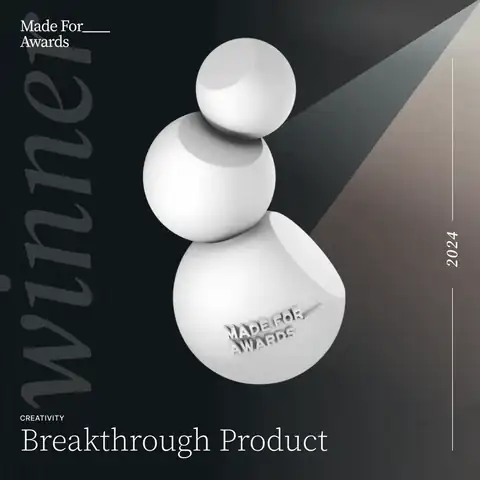
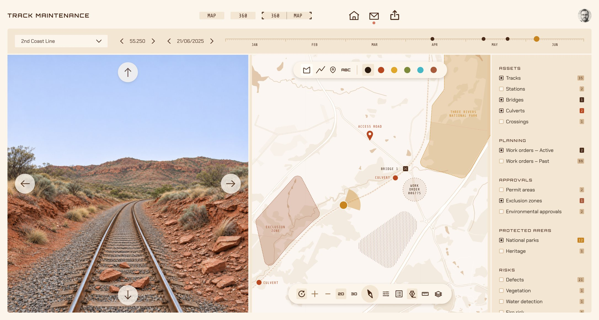
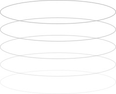
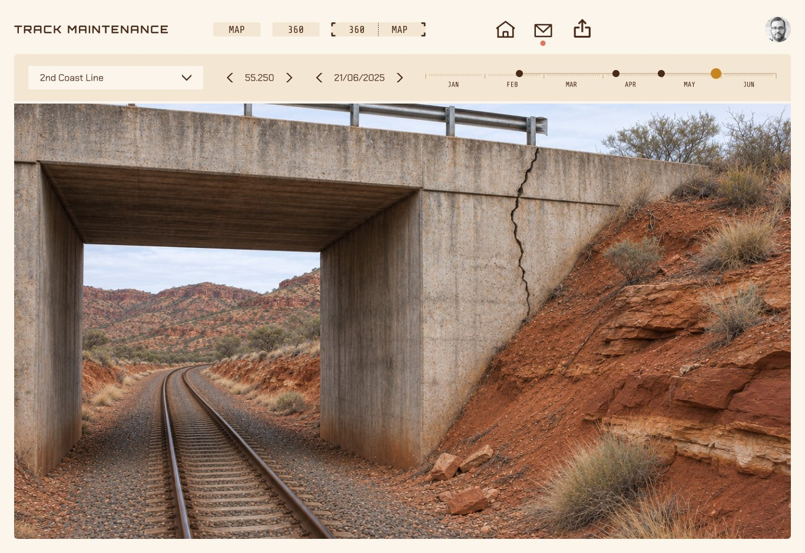
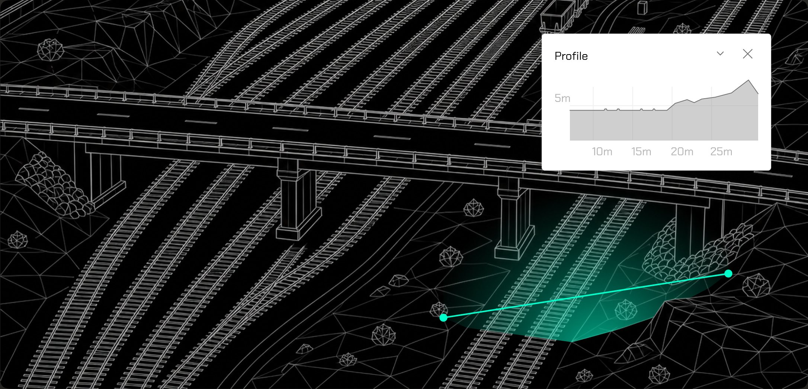
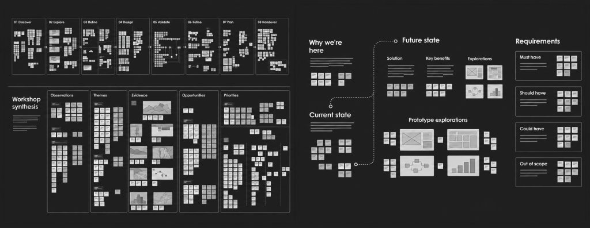
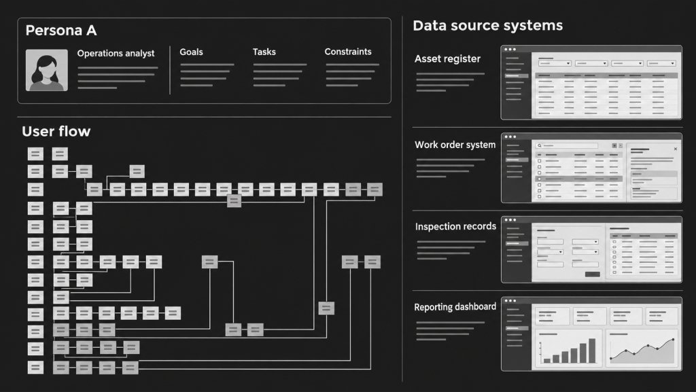
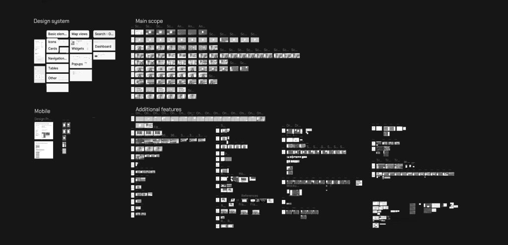

4-dimensional spatial asset management, planning and collaboration tool
A family of data-heavy web apps, dashboards and custom workflows for a railway company, replacing and connecting about two dozen tools used to plan and run track inspections. One 2D and 3D map of the network with 360° imagery, LiDAR point clouds and around 30 data layers through time, used by about 2,000 people.
I joined as the design lead after the first interviews and wireframes, then ran discovery and validation workshops, built high-fidelity prototypes and a new design system, and polished production designs for dozens of new features. I led a team of up to three designers, and prototyped new features for client pitches.

Won Creativity: Breakthrough Product Made For Award (EY Global) for developing an immersive view of the client’s physical assets.
Stakeholder reviews
Daria [...] has been an invaluable team member both hands-on tools for ***, and within the Design team – coaching [two junior designers] for which they have been greatly appreciative.
When it comes to UI Design and Figma, I can’t sing Daria’s praises enough. She is a technical expert who is helping the entire *** Design team upskill through her idea of [...] weekly Figma learning sessions. Daria is also highly organised, closely managing the tasks of the other designers on her workstream to ensure quality deliverables and deadlines are met. Thank you, Daria!
Daria is a real leader and is a gold standard example of someone who embodies democratised learning and teaching. She has technical excellence, is always the first to master new features [...], and is constantly learning and sharing her expertise with others. She also has resilience in spades when navigating difficult dynamics. Although working part time, Daria’s contribution is really as much as someone working full time.
Daria has managed to deliver an outstanding product that is of a much higher quality than most other enterprise applications. She has also managed to do this while working part-time, which is impressive in itself.
Daria has a strong user-centric sense but also a strong business sense [...].
Daria is very technology savvy and takes an active role in spreading awareness across colleagues regarding pioneering new tech especially around AI implemented tools. She is also a great mentor and delegates work really well - she is a fantastic resource especially in times of tight turnarounds and unexpected client deadlines.

The problem
Rail track inspectors spent a lot of time on field visits: preparing forms beforehand, filling them in by hand on site, and searching for maintenance history across about two dozen disconnected systems. The brief: make field visits more efficient. We built a web app on Esri ArcGIS with a custom app on top. Defects, standing water, flooding and debris; assets and their maintenance; work orders; permissions and restricted areas such as national parks and heritage sites. Teams move along the line in 360° imagery from a train-mounted camera, or through a LiDAR point cloud.
process highlights: persona pivot
Initially, the problem looked like data entry for field inspectors.
But one-to-one interviews and design thinking workshops showed inspectors were fine with paper. The workload sat with the shift manager, who compiles data from many sources before a visit and processes the reports after it.
And the data was already there. Surfaced well, it could replace some field visits altogether with a virtual inspection. That moved the product from digitising forms to bringing every source onto one map, and later to proactive planning: fire and flood risk dashboards, and image recognition that flags standing water and vegetation on the track.



Prototyping for sales
Interactive prototypes were the key asset in our sales pitches: they made complex features and use cases easy to grasp for every stakeholder, and then guided delivery.
We’ve engaged a group of power users for ideation and spread of knowledge. Our user champions suggested a link that shares the exact view (camera angle, zoom and data layers), and it became one of the most loved features to align on planned work and defects. They also pioneered virtual inspections for learning and onboarding, training new teams and contractors before they ever went on site.


